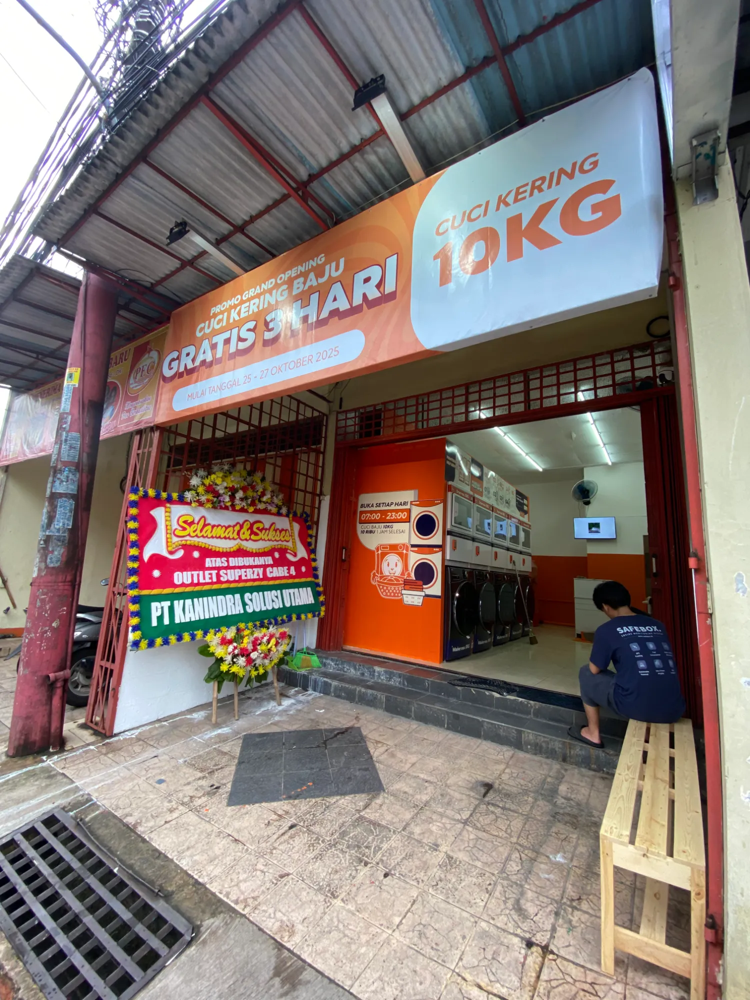
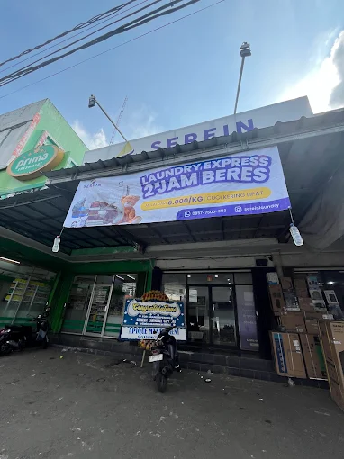

Holding company · Laundry services
Building the group behind everyday laundry.
Kanindra Group is the holding company of Superzy Laundry Place and Serein Laundry, two laundry brands run on one shared standard of quality and operations.
About the group
One holding company. Two laundry brands. A shared foundation.
PT Kanindra Solusi Utama owns and develops its laundry brands, and provides the systems, supply, people and finance that let each brand focus on its customers.
2Laundry brands
5Outlets
15Team members
2024Founded


Our brands
Two brands, each with its own identity.
How we run the group
Shared standards, so every brand can grow.
Operations
Common process, equipment and quality standards across every outlet in the group.
Supply & procurement
Central purchasing of detergents, machines and consumables for consistent cost and quality.
People & training
One training path and one set of service principles for every team member.
Technology & finance
Shared systems for point of sale, reporting and financial control across brands.
Partnerships, franchise and business enquiries.
Talk to the Kanindra Group team about working together.
Contact us